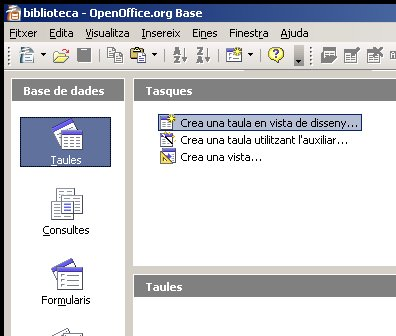
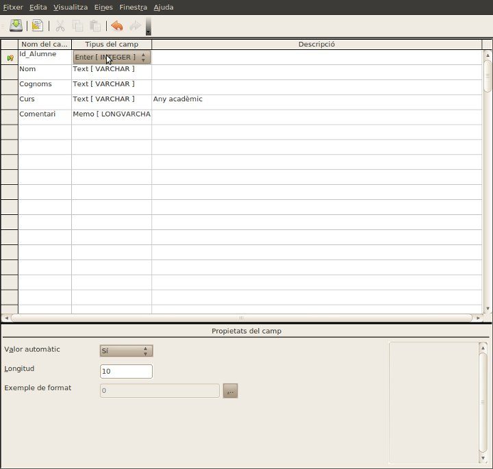
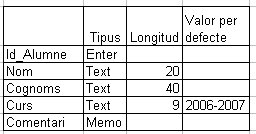
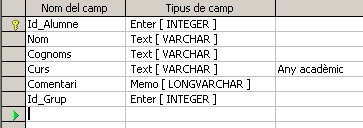
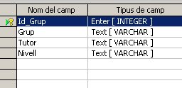
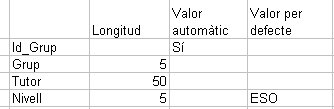
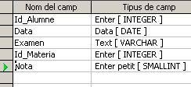
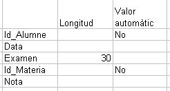
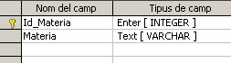
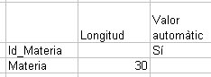

Un cop ja hem fet un passeig per l'entorn de treball ara l'alumne haurà de fer una base de dades pròpia: Alumnat.
Haurà de crear la taula Alumnes: Id_Alumne, Nom, Cognom, Curs, i Comentari.
Primer pas per crear una base de dades:
Entra dintre de OpenOffice.org Base. A la finestra que trobes selecciona l’opció Crea una base de dades nova i a continuació prem Finalitza.

Creació d'una taula:
Ara per crear la primera taula el que has de fer és seleccionar el tipus d’objecte amb el que treballaràs, Taules, i a la part dreta de la finestra fer clic sobre Crea una taula en vista disseny…

Crea la taula Alumnes tal com pots veure a la següent imatge:

Per començar tens que escriure el primer Nom de camp, ID_Alumne, i deixar-ho amb el Tipus de camp, Enter [INTEGER]. A continuació els Nom de camp, Nom, Cognoms, Curs, i finalment Comentari.
Les propietats dels camps seran:
A continuació et mostrem el tipus de camp que correspon a cadascú i el valor de les propietats Longitud i Valor per defecte:

Per establir una Clau primaria al camp Id_Alumne fes un clic sobre el botó dret al quadre de selecció de camp i selecciona al menú l'opció Clau Primària.
Per guardar la taula un cop creada pots fer un clic sobre la següent icona o seleccinar l'opció Desa del menú Fitxer.
Ara et demanarà el nom de la taula, escriu: Alumnes.
Quan es dissenya una base de dades i es decideix el nombre de taules que aquesta tindrà els criteri més importants que es fan servir són:
Les taules que pertanyen a una mateixa base de dades habitualment estan relacionades entre sí per tal de complir els criteris indicats anteriorment.
Per exemple, una informació que seria interessant tenir dels alumnes és el grup al que pertany, però aquest valor es repetiria molt ja que tindriem molts alumnes on el valor del camp Grup seria el mateix, aleshores la solució és crear una taula que contingui el nom del grup i un identificador numèric del grup. Aquest identificador seria un valor enter que ocuparia poc espai: 0, 1, 2… i aquest seria el valor que posariem dintre de la taula Alumnes per tal d'establir una relació amb la taula grups.
Per exemple es crea una nova taula Grups, on definirem el camp amb nom ID_Grup, que estarà relacionada amb el camp Id_grup que també posarem a Alumnes. Crearem un altra taula anomenada Notes que es relacionarà amb la taula Alumnes mitjançant el camp Id_Alumne. En el primer cas molts alumnes pertanyen al mateix grup, i en el segon cas un Alumne pot tenir moltes notes.
Afegim el camp nou Id_Grup a la taula Alumnes:

Aquesta seria l'estructura de la taula Grups:

Aquestes són les propietats dels camps:

Aquest és el disseny de la taula Notes:

Aquestes són les propietats dels camps:

Aquest és el disseny de la taula Materies:

Aquestes són les propietats dels camps:


|
|

|
|